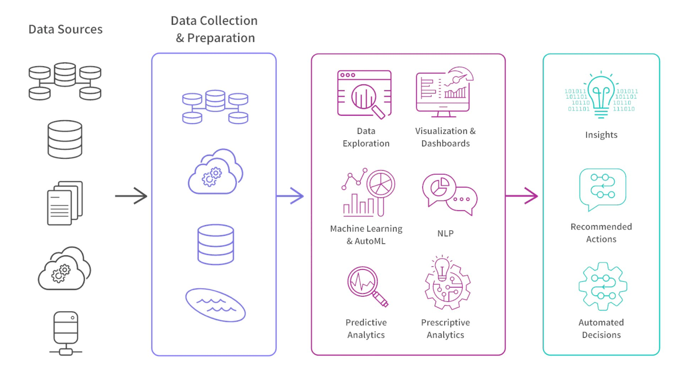

Applying JTBD to Optimize Healthcare Delivery with AI
In 2024, I worked with a leading healthcare technology company to improve their AI-powered clinical decision support platform. This artificial intelligence (AI) platform enables healthcare networks and clinicians to optimize care delivery through predictive analytics. It is designed to help hospital networks reduce costs while maintaining high-quality care standards.
Despite significant technological capabilities, the platform faced low adoption rates among clinicians. The primary challenges included:
We applied the Jobs To Be Done (JTBD) framework to uncover the underlying motivations and goals of clinicians, beyond just their functional tasks. This approach helped us understand:
Job: Reduce decision-making uncertainty
Clinicians regularly face situations where they must make decisions without all the ideal information available.
Pain point: Anxiety about missing critical factors that could affect patient outcomes
Quote: "I'm often making decisions based on partial information and limited time. What keeps me up at night is worrying I've missed something important."
Job: Maintain expertise without overwhelming time investment
Clinicians struggle to keep up with the rapid pace of medical research while managing full patient loads.
Pain point: Fear of falling behind on latest treatments and protocols
Quote: "It's impossible to read everything in my field. I need ways to quickly understand what new research actually matters for my patients."
Job: Build trust with patients and colleagues
Clinicians need to justify their decisions with clear rationales to various stakeholders.
Pain point: Difficulty articulating complex medical reasoning quickly
Quote: "Patients want to know why I'm recommending something, and I need to explain complex decisions in terms they can understand and trust."
Based on our JTBD analysis, we identified key opportunity areas for the AI platform:
Our JTBD research informed several key design principles for the platform redesign:
| Metric | Before | After | Change |
|---|---|---|---|
| Platform adoption rate | 23% | 62% | +39% |
| Daily active users | 156 | 412 | +164% |
| Feature utilization | 1.4 features/session | 3.8 features/session | +171% |
| User satisfaction score | 2.8/5 | 4.3/5 | +54% |
The Jobs To Be Done framework provided crucial insights that a traditional feature-focused approach would have missed. By understanding the deeper motivations and contexts of clinical decision-making, we were able to reposition the AI platform as a trusted assistant rather than a mysterious algorithm.
Key learnings from this project include:
Building on the success of this initial redesign, the team is now: